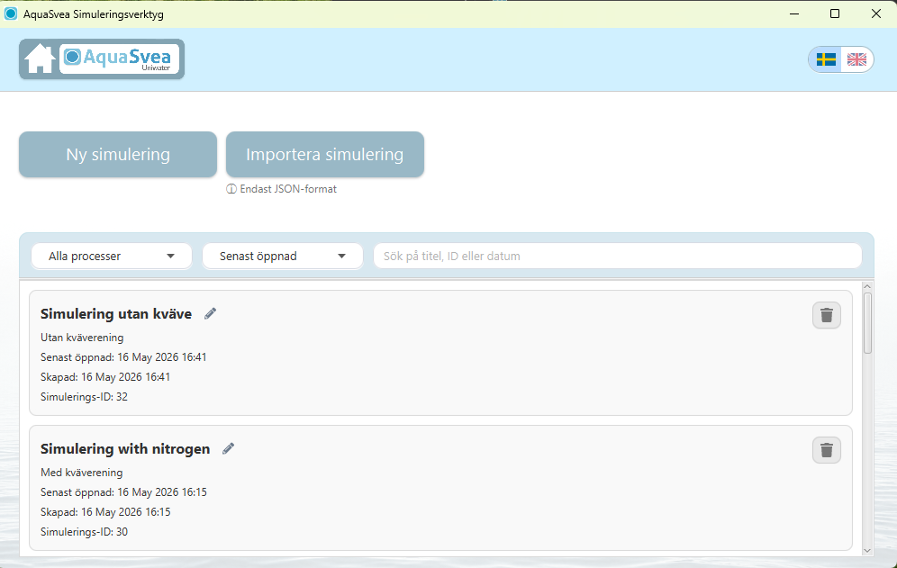

AquaSvea — from Excel workflow to simulation tool
Together with my team, I developed a standalone Java application for an external organisation in the Swedish water and wastewater sector. The solution replaced an Excel-based workflow and made simulation work more structured and reusable.
Challenge
Translate a domain-specific Excel workflow into a reliable desktop tool without losing the client’s established way of working.
My contribution
Worked with requirements, implementation, testing and documentation.
Outcome
Delivered a standalone simulation tool that digitalised the client’s workflow. The thesis received grade 5

- Java
- JavaFX
- System Design
- Testing
- Scrum